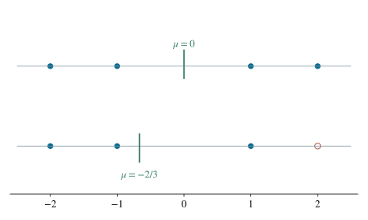

P0119 · 思维训练
中心对称点集中删去一点后的期望
原集合用反对称消去总和，删点后重新计算分母。
1 题目
令 。从 中删去点 ，在剩余的 个点中等可能选取一点 ，定义 。求 。

一维示例展示相同机制：删除正值使剩余均值负移，同时分母减少。
2 思路与提示
先算完整的 点集合上的总和，再扣除被删点的贡献；不需要逐个求坐标和的分布。
3 解答展开 / 收起
3.1 完整集合上的总和
每个坐标有四种选择，各坐标可以任意组合，所以 。若 ，则每个 仍属于 ，因而 。取负两次回到原点，而且集合中没有坐标全为零的点，所以 。因此这 个点被不重不漏地分为 对。
每一对满足 ，两项之和为零。把 对相加，得到 。
3.2 删除后的等可能均值
被删点 的贡献为 。剩余集合记为 ，则 ，且 。题设等可能选择意味着每个剩余点的概率都是 。按期望定义 ，可将常数概率提出，得到：
3.3 以各坐标的期望核验
固定第一个坐标为某个值，另外两个坐标各有四种选择，所以该值恰出现 次。原集合中第一个坐标的总和为 ，其余两个坐标同理。删去 后，每个坐标都少掉一个 ，各自总和为 ，均值为 。三个坐标均值相加为 ，与配对法一致。
4 方法与讨论
删点后的变化可用一个一般公式描述。若有限集合有 个点，函数值均值为 ，则总和为 。删去函数值为 的一点后，新集合有 个点，总和为 ，新均值是 。本题 ，因此均值向负方向移动 。
从配对角度看，被删点 原本与 配对。删去 后，其余 对仍然抵消，只有 留下值 。这直接解释了剩余总和为何为负。